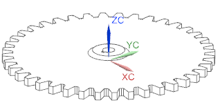

编辑表达式并更新部件
-
在 C 列中更改下表所示单元格的值，保持其它值不变。
A
B
C
1
2
描述
参数
3
齿轮齿数
N
40
4
每 mm 所含齿数
P
5
齿厚
Thickness
10
6
中心轮毂直径
hub_dia
40
7
中心轮毂高度
hub_height
8
中心孔的直径
Hole_dia
15
9
中心键槽的长度
Key_length
10
中心键槽的宽度
Key_width
11
现在已经可以更新部件。
-
高亮显示所有表达式单元格(B3:C10)并选择加载项→定义表达式范围。
-
选择加载项→更新 NX 部件。
电子表格中的所有数据都将传送回部件中。
-
关闭电子表格。
-
在退出电子表格对话框中，点击确定。
-
在 NX 中，注意到部件已经根据您在电子表格中做出的修改来更新。
之前

之后

-
关闭部件。